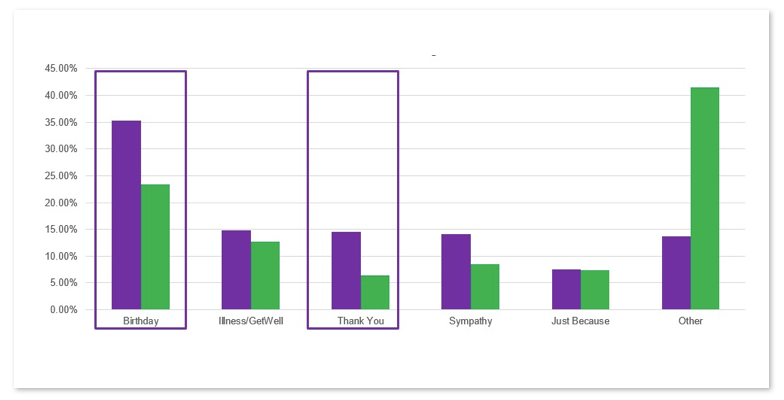
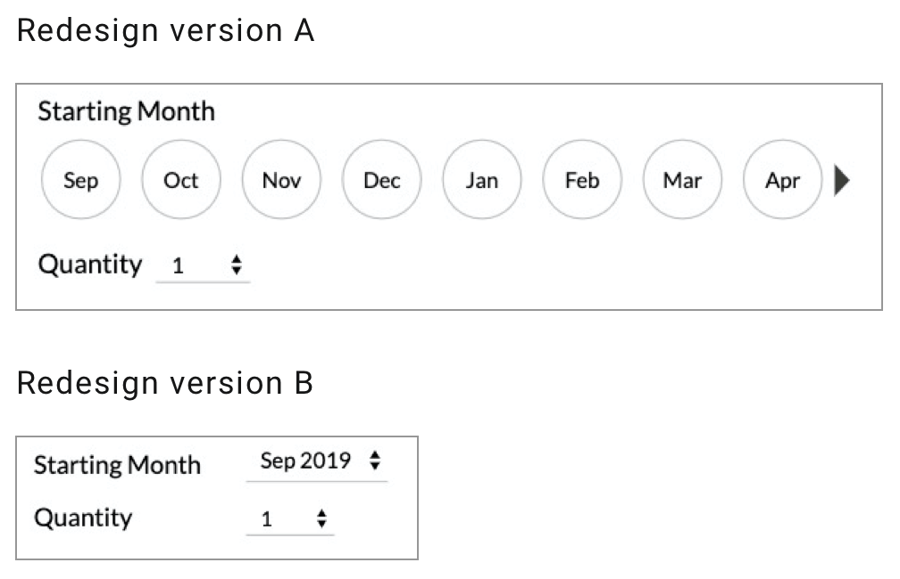

Fruit of the Month Club
Product Page Redesign

Bite-size Summary
Design a new purchasing experience for the fruit club customers and their gift recipients. A longstanding service shouldn't mean an outdated interface.
I identified usability roadblocks and conducted usability tests via rapid prototyping to inform the design decisions; designed and delivered the interactions; and oversaw the implementation.
Result
"The experience was flawless. It was really straightforward and to the point." - Club Research Participant
Role:
UX research & design
Time:
2 months
Skills:
- Remote usability testing
- Wireframing
- Prototyping
- A/B testing
Tools:
Challenge
How might we improve the discoverability of the product information while maintaining a relatable experience for catalog customers?
Fruit club products have been one of the most popular gifting options for older adults or their loved ones to enjoy fresh, in-season fruits since 1936. However, the website interface was built a decade ago based on the catalog experience. How might we improve the usability of the site and discoverability of the product information while making the experience more digital native friendly while keeping it relatable for our existing senior customers?
Solution at a Glance
Focus on feedback, accessibility, and prioritizing product information
The old site experience was based upon a catalog layout; long columns with every bit of information on the same page. The redesign focuses on prioritizing information, increasing accessibility, and providing immediate feedback after any interaction, to speak to our senior catalog customers while attracting younger demographics by eliminating the print-based layout.
- Original
- Iteration 1
- Iteration 2
- Iteration 3
- Iteration 4
- Final

Research
Understand the problem with a mindful eye for budget and resources
As the solo designer and researcher with the limited resources the company could provide, I conducted competitor analysis, secondary research, and remote usability testing to understand the market, customers, and usability opportunities.
Opportunity
Improve the information discoverability, iconography, and micro UX copy
Based on the customer profile, I designed a series of usability tasks and recruited representative users from UserTesting.com. A few major issues include:
-
- The relationship of price, starting month, and Club length is unclear.
- The scannability of prices needs to be improved.
- The interaction lacks feedback to inform the customer of current selection status.
-
- The concepts of upsells and add-ons need to be delivered clearly.
- The discoverability of upsell product information needs to be increased.
- The upsell copy was mistaken as add-ons.
Rapid prototyping
From low-fi to hi-fi, every interaction is supported by research based rationales
Product Page Wireframe
{kind=link}
Product Alt Images Wireframe
{kind=link}
Product Upsell Wireframe
{kind=link}
Prototype
Using the wireframes as a starting point, I created a high-fidelity, interactive prototype for user testing.
Design iteration 1
Look before you leap - Can our older clientele understand the button-like UI design?
The new experience aims to be responsive thus a more touch-device friendly selector pattern is adopted. I conducted a few rounds of tests to examine the following hypotheses:
H1: Customers will be able to understand how to change the starting month.
H2: Customers will find the new starting month design convenient because it shows the product availability before a club length option is made.
Result
10 out of 10 test participants could understand the new interaction immediately, and more than half preferred the button UI because it made the starting month availability obvious.
Design iteration 2
Evolve with user feedback - How do we provide more information about club length?
The old experience didn't provide much feedback on the selected club length and period. Would our users notice the feedback provided with a photo snipe on the new experience?
H1: Customers will notice the information about the selected length/date on the photo.
H2: Customers will find the information helpful.
Result
Users immediately noticed the information provided on the photo and found it useful.
{kind=link}
Design iteration 3
Balance business goals and user needs
As a promotion-focused company, our customers rely heavily on coupons and seasonal discounts. Therefore, highlighting those offers is essential for the marketing team.
H1: By calling out the "best value" club, we will get more orders for the 12 month club product.
H2: By sorting the price range from high to low, the average order value per customer will increase.
Result
The treatment significantly boosted the order value and the sales.
Result
"The experience was flawless. It was really straightforward and to the point."
The new design increased upsell purchase by 17.09% and revenue by 14.11% (about $ 1 million more than the old experience over a 4 month test.) Besides quantitative uplift, customers have been given positive feedback, which also reflects on their purchase behaviors.